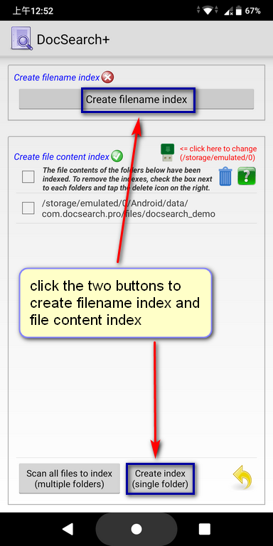
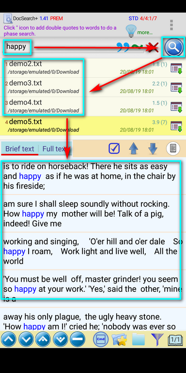

I have
installed DocSearch plus, but I cannot find anything. What are the
correct steps to use it?
Before starting your first search, you need to create indexes for your
files. Please follow the steps below:
(You can also refer to "Menu->Help->Brief User
Guide->Page 2 & 4 for details")
Step 1:
Create the indexes via:
Menu ->"Create/Maintain index"->"Maintain index"->"Create filename index" and "Create file content
index"("Create index" or "Scan all file to index")
You will see the following screen and follow the instructions described
in the screenshot.

Step 2:
Use a keyword to search your files on the main screen of this app.
Detailed steps as following:
1. Enter keywords (e.g. "happy")
2. Press the blue "search icon" on the right.
3. All files containing "happy" will show.
4. Click the file name, you can see the file content in the lower half
of the screen.
(For more functions on the main screen, please refer to "Menu ->
Help -> Brief User Guide -> Page 3")
